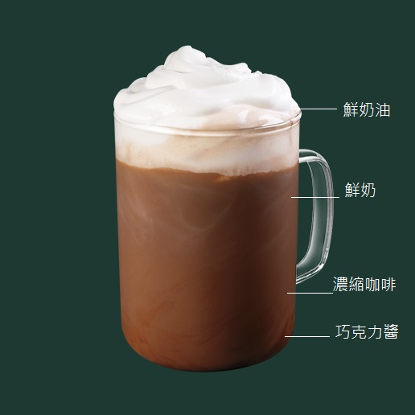

Caffe Mocha 摩卡
和經典的義式拿鐵咖啡一樣，由濃縮咖啡融合新鮮的鮮奶，額外再加入香濃巧克力，再覆蓋上鮮奶油。
摩卡咖啡的名字起源於位在紅海海邊的葉門小鎮摩卡，有一種「巧克力色」的咖啡豆，這讓人產生了在咖啡混入巧克力的聯想，發展出巧克力濃縮咖啡飲料。這個地方在15世紀時壟斷了咖啡的出口貿易，特別是對阿拉伯半島區域的咖啡出口貿易影響特別大。在歐洲，摩卡咖啡既可能指這種飲料，也可能僅僅指用摩卡咖啡豆泡出來的咖啡。
摩卡咖啡的名字起源於位在紅海海邊的葉門小鎮摩卡，有一種「巧克力色」的咖啡豆，這讓人產生了在咖啡混入巧克力的聯想，發展出巧克力濃縮咖啡飲料。這個地方在15世紀時壟斷了咖啡的出口貿易，特別是對阿拉伯半島區域的咖啡出口貿易影響特別大。在歐洲，摩卡咖啡既可能指這種飲料，也可能僅僅指用摩卡咖啡豆泡出來的咖啡。